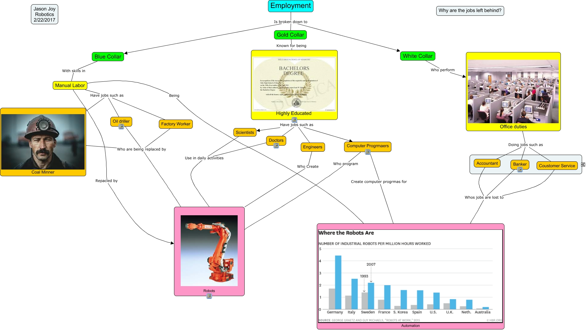

WARNING:
JavaScript is turned OFF. None of the links on this concept map will
work until it is reactivated.
If you need help turning JavaScript On, click here.
This Concept Map, created with IHMC CmapTools, has information related to: Empolyment, Employment Is broken down to Blue Collar, Manual Labor Have jobs such as Factory Worker, White Collar Who perform Office duties, Scientists Use in daily activities Robots, Banker Whos jobs are lost to Automation, Engineers Who Create Robots, Gold Collar Known for being Highly Educated, Employment Is broken down to White Collar, Manual Labor Have jobs such as Coal Minner, Highly Educated Have jobs such as Engineers, Highly Educated Have jobs such as Computer Progrmaers, Office duties Doing jobs such as Coustomer Service, Highly Educated Have jobs such as Scientists, Coustomer Service Whos jobs are lost to Automation, Manual Labor Being Automation, Highly Educated Have jobs such as Doctors, Office duties Doing jobs such as Accountant, Blue Collar With skills in Manual Labor, Computer Progrmaers Create computer progrmas for Automation, Employment Is broken down to Gold Collar
